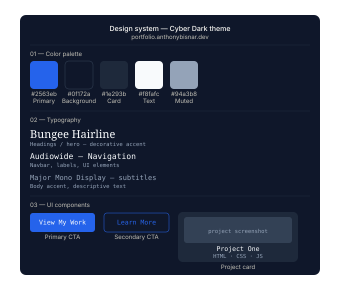

Beyond the final pixels: How I move from a blank canvas to a functional digital environment.
Every project starts with a logic map. I define the user journey, database relationships, and UI hierarchy before a single line of code is written.

This is where the aesthetic meets the function. For my portfolio, I chose a "Cyber-Dark" theme using high-contrast blues and radial gradients to evoke a modern, high-tech feel.

Turning designs into reality. I focus on responsive CSS, efficient C# backend logic, and ensuring that the transition from a wireframe to a live build is seamless.
